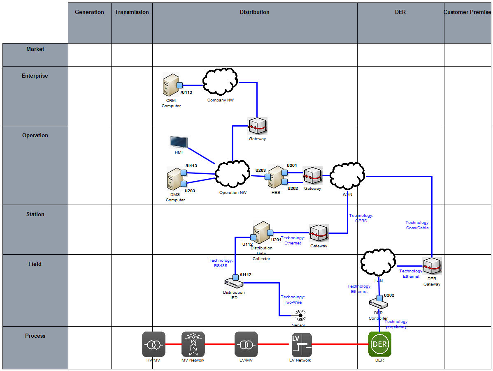

System Architecture - Component Layer
The previously described SGAM Information respectively SGAM Communication Layer is focusing on the Point-to-Point relation between two components. Contrasting to this, the SGAM Component Layer delivers the possibility to completely describe the ICT architecture to be realized. Thus, additional elements such as gateways or firewalls can be integrated. Another very important aspect is the representation of particular network segments. Similar as before, the elements within the diagram represent the nodes of a particular ICT architecture. The edges (relations) are used to define the communication technology such as Ethernet, Coax or GSM.
The example depicted in Figure 1 depicts how the existing components utilize different gateways to communicate over certain network segments. Moreover, the relations in between are intended to specify the communication technology used. For example, the Distribution IED fetches the sensor value over a two-wire connection whereas it communicates over RS485 with the (local) Distribution Data Collector (DDC). The DDC itself is connected to the WAN via a GPRS modem with a direct Ethernet link between the DDC and the gateway.

Figure 1. SGAM Component Layer.
The representation of the SGAM Component Layer as given in Figure 1 is suitable to only provide an overview on the overall ICT architecture and thus, it helps to maintain the "big picture". The given abstraction level is clearly not detailed enough for planning and maintaining the particular ICT architecture. However, to provide consistency over the whole model, the detailed documentation for the ICT architecture also should be included here. A very feasible way is to utilize the network segment elements to provide an in-depth description.